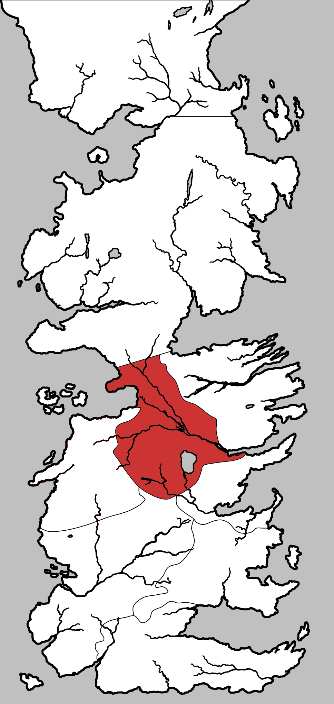

Riverlands
The Riverlands is a central region of the continent of Westeros, consisting of the fertile areas between the forks of the Trident. Because of its central position in Westeros it has been a frequent battleground. The people of the Riverlands are known as “rivermen” and are a mixture of hardy warriors, peaceful fisherfolk and devout smallfolk. Bastards born in the Riverlands are given the surname Rivers.
For the last three centuries the Riverlands have been ruled by House Tully from their castle at Riverrun, until their defeat in the War of the Five Kings. Riverrun is now held by House Frey of the Twins, although Petyr Baelish has been named Lord Paramount of the Trident and the liege lord of the Riverlands with Harrenhal as his seat.
The Riverlands encompass a region of plains, forests, hills, and endless rivers. The lands extend as far north as the swamp area of the Neck, at the source of the Green Fork, east up to the kingsroad, south to the Blackwater Rush, and west to Ironman’s Bay and the hills of the Westerlands. It seems that the Riverlands only has easily defensible borders in the North. Although there are mountains in the east and the west the mountains themselves seem to belong to the Vale and the Westerlands respectively. In the west the heavily fortified castle Golden Tooth guards the entrance to the Riverlands but belongs itself to the Westerlands.
The Riverlands is named for the number of rivers which are present. The Green Fork that runs south from swamps in the Neck, the Blue Fork and the Red Fork, that run from the north from the southwest, come together a short distance from Lord Harroway’s Town to form the Trident. The Red Fork runs from its source in the western mountains to Riverrun where it combines with the Tumblestone and then runs to the east and combines with the Trident before pouring into the sea at Saltpans. In the south the Blackwater Rush runs through a part of the Riverlands.
The Riverlands does not contain any major cities but a number towns, such as Fairmarket, Lord Harroway’s Town, Saltpans, Maidenpool and Stoney Sept. Its major castles are Riverrun, Harrenhal, Seagard, Stone Hedge, and The Twins. Additional noteworthy places in the Riverlands are the old ruins at Oldstones, where in ancient times a Riverlands dynasty used to have its castle, and the Lake God’s Eye with the Isle of Faces in it.
Map on Next page.

Map on Next page.
